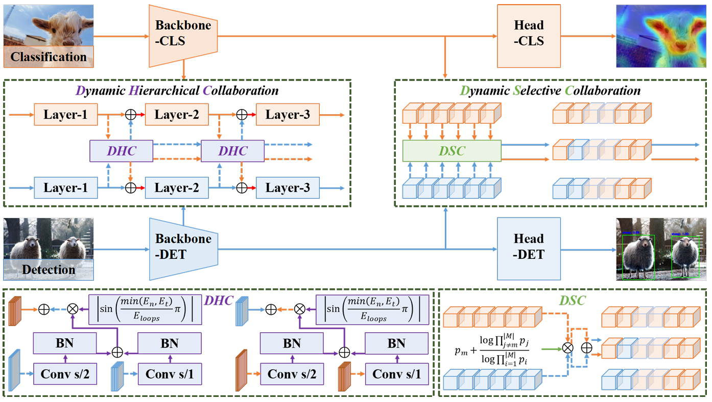
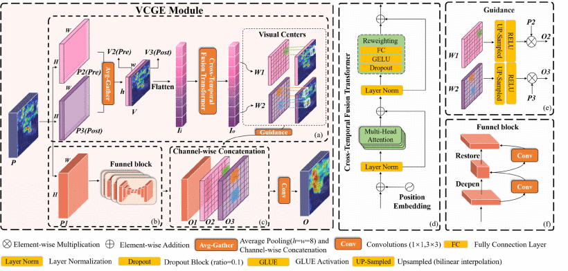

Zhoupeng Guo is currently pursuing the Ph.D. degree under the supervision of Prof. Pengfei Zhu. His current research focuses on aerial-ground collaborative perception and embodied intelligence. He received his M.S. degree in Control Engineering from Northeastern University, China, and his B.S. degree from Hebei University of Architecture.

ICML
TGRS